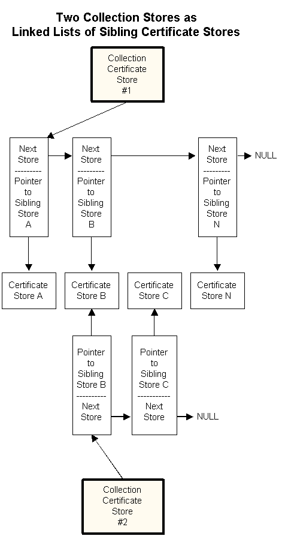

As the number of certificates, certificate revocation lists (CRLs), and certificate trust list (CTLs) in a user's collection grows, the organization of those certificates becomes an issue. One possible solution is to create separate certificate stores to keep different kinds of certificates. This solution creates a new problem because an application might need to search several different stores to find a specific certificate. The use of logical or collection stores solves this problem.
A logical store and a collection certificate store are groups of physical stores that appears to an application as a single store. All member stores of a logical or collection store can be searched or enumerated with a single function call to either CertFindCertificateInStore or CertEnumCertificatesInStore.
The use of logical or collection stores also provides flexibility that is difficult to achieve with paper records. A certificate in a single physical store might need to be a member of several different logical groups. Therefore, an individual physical store can be a member of more than one logical or collection store as shown in the following illustration.

This illustration presents the following basic, logical certificate store concepts:
Collection stores are built within an application by opening a collection store by using CertOpenStore and then using CertAddStoreToCollection to add an open sibling store to the collection store. A sibling store can be deleted from a collection store by calling CertRemoveStoreFromCollection.
Â
Â